从0教你写元素循环
最近看到很多元素相关循环，好多人不理解切协调的判断原理，特意出一篇文章。
首先，你要理解，元素循环的原理，要先确认当前协调，以及下一个要切的协调。
我使用的是星岬岛的直伤敏捷暴风循环
利用sc翻译工具，分析dps日志
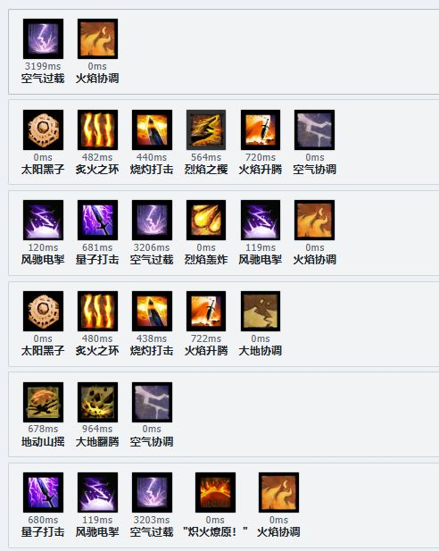
如图所示
起手在雷，雷切火，火切土，土切雷完成闭环
那么顺序是 雷切火，火切土，土切雷
这里主要分析的是剔除起手，以外的后续循环，从第三排开始看，雷>火>火>土>土>雷
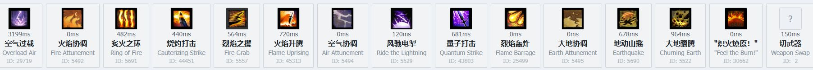
然后细分切协调的条件，按照日志给出的优先级划分，得到一下条件，把要写协调的条件放到末尾，表示，所有技能放完在切。
这里由于我没采用日志的切协调方式，所以可以删除上图中的协调相关技能。
最后为
空气过载，炙火之环，烧灼打击，烈焰之攫，火焰升腾，风驰电掣，量子打击，地动山摇，大地翻腾，炽火燎原，大雷=小火，大火=小土，大土=小雷
例如：雷切火，那么这类就需要2个条件
当前协调，以及下一个要切的协调。
1，当前协调是雷
2，火协调的小图标
我这里采用的是下面2种取色方案
主循环：大雷=小火，大火=小土，大土=小雷
主要是利用大图标的判断，区分当前处于哪个姿态，然后在当前姿态下去判断下一个要切的小图标。
大雷=小火
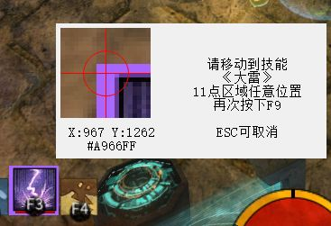
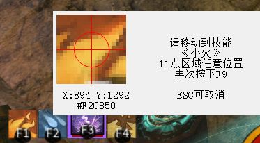
大雷=小火，这个判断就是在雷协调下，如果火协调可用，就切到火
大火=小土
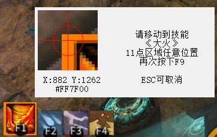
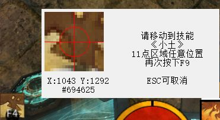
首先确认当前大火协调，然后再去获取下一个要切的土姿态图标的颜色。
大土=小雷
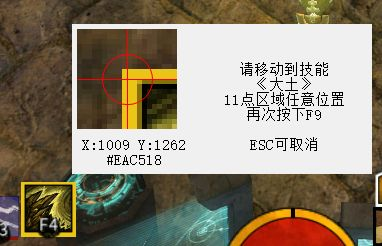
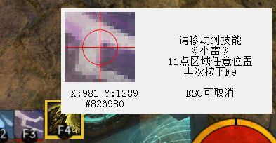
确认当前土协调，获取要切的协调小雷图标
下面是最重要的一点，由于大协调状态下，cd中跟非cd中，颜色不一致，取色边框可能会导致必须等大协调cd冷却完毕，才会切下一个协调。
为了避免这个情况，你需要在f9的协调中，加入模糊度。
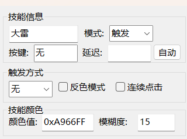
包括大雷，大火，大土，全部加入15模糊度，这样，即使大协调处于冷却，可以切下一个协调。
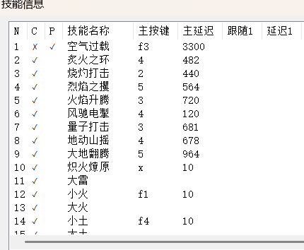
小图标除了取色以外，也可使用截图、多点取色等功能。
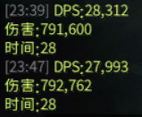
最终1个蛋糕食物，0灌注，由于没有采用跟随按键，切协调后，需要等待一会，导致输出过低。
再次分析日志
切火后，跟随的是火4，火3
切雷后跟随的是雷4，雷3
切土后跟随的是土4，土5
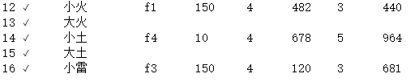
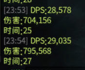
这样修改后输出会略有提升，sc基准是32000，1个蛋糕已经接近sc的90%，吃满食物+灌注应该是基本一致。
下面是最终循环，可一键导入，也可在基础修改优化，本文主要讲的是使用方法。
假如有些技能冷却cd过长，可能加了跟随按键反而会增加延迟，那么就去掉跟随按键2，只保留第一个跟随技能。
|空气过载，炙火之环，烧灼打击，烈焰之攫，火焰升腾，风驰电掣，量子打击，地动山摇，大地翻腾，炽火燎原，大雷=小火，大火=小土，大土=小雷||
空气过载,f3,3200|炙火之环,4,482|烧灼打击,2,440|烈焰之攫,5,564|火焰升腾,3,720|风驰电掣,4,120|量子打击,3,681|地动山摇,4,678|大地翻腾,5,964|炽火燎原,x,10|大雷|小火,f1,10|大火|小土,f4,10|大土|小雷,f3,10
[&DQYfHSkvMCd0AHQAwxIAAL4BAADLAAAAJgAAAAAAAAAAAAAAAAAAAAAAAAACWgAvAAA=]
狂战套 猎龙 学者 项链神谕，增益370+，剑匕首 武勇精确 烟花
最后，还有一种写法，这个就是基本按照sc循环来了，利用进入2次火协调后，才切土，实现复刻sc循环，同时由于大火，跟大土协调下，共用1个小雷，如果用取色会导致颜色冲突，那么这时候就可以利用截图模式，截图雷协调的小图标，这样来实现火、土协调下共用小雷图标的判断。
|空气过载，闪电风暴，炙火之环，烧灼打击，烈焰之攫，火焰升腾，量子打击，风驰电掣，地动山摇，大地翻腾，大雷=小火，小火=2=小土，大火=小雷，大土=小雷|炽火燎原，轰炸|
空气过载,f3,3200|闪电风暴,8,1000|炙火之环,4,482|烧灼打击,2,440|烈焰之攫,5,564|火焰升腾,3,710|量子打击,3,681|风驰电掣,4,120|地动山摇,4,678|大地翻腾,5,964|大雷|小火,f1,150,4,550,3,550|小土,f4,150,4,830|大火|小雷,f3,150,4,150|大土|炽火燎原,x,10|轰炸,b,10
[&DQYfHSkvMCd0AHQAwxIAAL4BAADLAAAAJgAAAAAAAAAAAAAAAAAAAAAAAAACWgAvAAA=]
狂战套 猎龙 学者 项链神谕，增益370+，剑匕首 武勇精确 烟花
评论列表（21）
没懂啊，大佬。。想做火＞雷＞土的，做出来只要没CD马上就切了，武器技能放不出来，切过去也乱放了。还有教学视频里的优先级模式是多个技能同时没cd的情况，能设置哪些先放吗？（比如幻术f123）
@你的海 姿态切换放循环结尾，并加上150毫秒延迟
佬，直伤敏暴风实战F3总会被打断，控制。能不能写一个直伤敏唤元参考？感谢。
@π f3勾选黑色跳转，只有图标完全变黑才会执行下个技能，避免无急速导致的打断。
@melis 感谢佬。
切不到土协调，是不是哪里错了，大佬
@为爱发电 大协调边框，要加模糊度
@melis 加了，也切不了土，就雷火来回切。
@为爱发电 你看清楚，有2组循环，你用的是哪种，雷切火，火切土，土切雷，如果按这个写，就是大边框取色+模糊度+小图标(截图)，自己试试，删除掉其他技能。
@melis 好的，多谢大佬
@melis 大佬，我也遇到这情况，我把技能删除，留下：大雷=小火，大火=小土，大土=小雷 。 协调之间切换正常，但是加上技能，火就切不到土就直接卡住了，请问是释放技能影响了颜色吗？
@激战2玩家 把技能延迟调高一点点。。我这里就是。网络估计不行
@melis 大佬，我也遇到这情况，我把技能删除，留下：大雷=小火，大火=小土，大土=小雷 。 协调之间切换正常，但是加上技能，火就切不到土就直接卡住了，请问是释放技能影响了颜色吗？
@激战2玩家 卡在某个技能时，鼠标点击聊天栏，看持续触发哪个按键，就说明这个技能一直在释放状态导致卡住。
@激战2玩家 然后这个技能使用多点取色在试试
@melis 好的，多谢大佬。
m佬威武。。牛的不行
还得是你M大佬，太详细了，感谢指导
非常好的教学，感谢m大佬的分享！
卧槽还得是m佬
卧槽还得是m佬